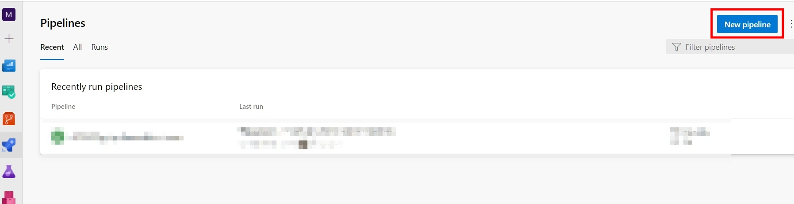
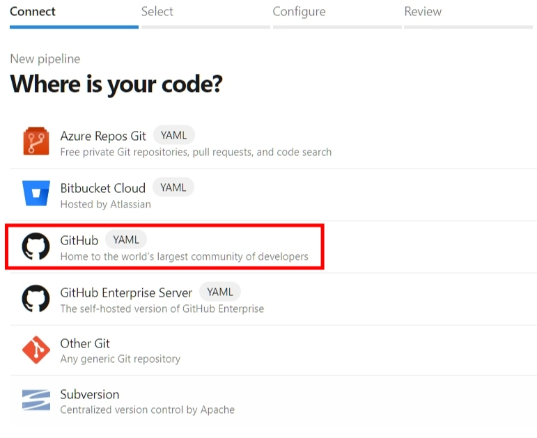
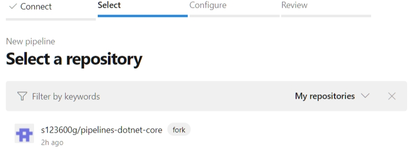
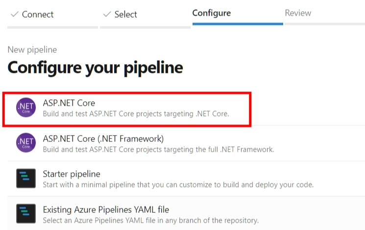
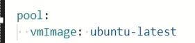
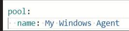
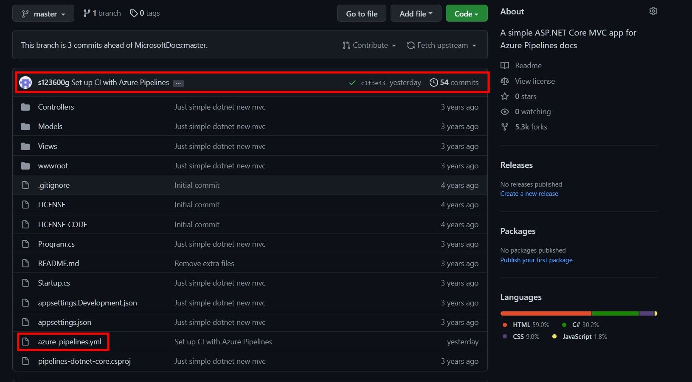
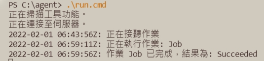
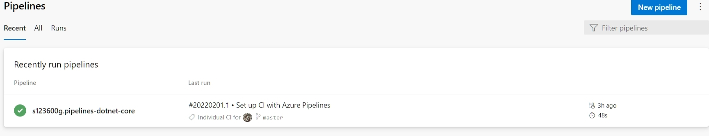
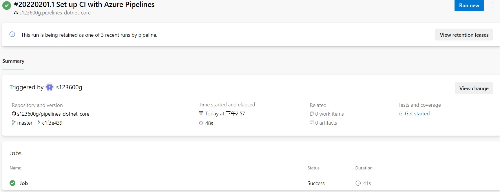

Azure Pipelines 設定Pipeline與使用Self-hosted Agent執行
2022-02-02 10:05:00
2022-02-02 10:05:00
參考官方教學 - Asp.Net.Core範例，搭配Self-hosted Windows Agent程式(參考3)。
注意事項：
- 需要Azure DevOps，並且已經建立好組織和Project。
- 需要GitHub帳戶，筆記使用儲存庫來自GitHub。
- Self-hosted windows agent需事前設置好並啟動監聽Job。
Step 1. 建立Gitub儲存庫
將官方GitHub範例儲存庫Fork至自己Github底下儲存庫，點擊Fork按鈕進行複製操作。

Step 2. 建立Pipeline
選擇使用專案 –> Pipeline頁面點選New Pipeline

儲存庫來源選擇GitHub

選擇已經Fork至自己GitHub儲存庫
- 如果為初次設置情況(GitHub儲存庫從未授權過)
- GitHub登入驗證。
- 選擇GitHub授權儲存庫來源。
- 授權GitHub安裝 Azure Pipelines 應用程式(核准安裝)。

選擇Asp.Net.Core 管線範本

設定預設Yaml內容
- 針對
Pool區塊內容- 如果是使用Azure DevOps Services包裝好VM Image，必須以
vmImage作為Key來設置。 - 此筆記需設置使用自訂Agent Pool集區。
- 關於自訂Agent Pool集區是在
Organization settings–>Agent pools，列表顯示內容就是集區名稱。- Ex：自訂Agent Pool集區名稱為
My Windows Agent- 預設Pool設置為
vmImage: ubuntu-latest更改為自訂Agent Pool集區名稱
 - 將Pool設置改為使用自訂Agent Pool集區

- 預設Pool設置為
- Ex：自訂Agent Pool集區名稱為
- 如果是使用Azure DevOps Services包裝好VM Image，必須以
Step 3. 執行Pipeline
在前一個步驟設定完Yaml內容後，點擊Save and run執行，觸發動作如下
-
將設定好Yaml檔案推送至授權GitHub儲存庫，Yaml檔案名稱為
azure-pipelines.yml
 -
Self-hosted windows agent 接收到新Job請求，開始執行Yaml內設置Job內容


